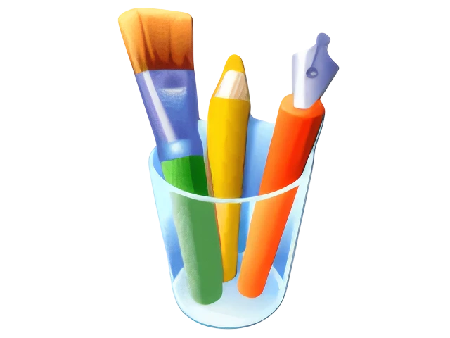

This took me 75 hours to make
Enjoy!
To begin, Enter your password.
(There's a hint in the bottom right corner)
Administrator
Type your password
→
Recycle Bin
My Computer
Welcome.txt
fix_me.py
Gift.zip
My Computer
File
Edit
View
Favorites
Tools
Help
Back
Up
Search
Folders
Address
Go
File and Folder Tasks
^
Make a new folder
Publish this folder to the Web
Share this folder
Other Places
^
My Documents
My Network Places
My Computer
Details
^
Windows Media Player - Birthday Edition
HAPPY BIRTHDAY!
Access Granted.
Administrator
Internet
Internet Explorer
E-mail
Outlook Express

Paint
Notepad
All Programs
▶
My Documents
My Computer
Control Panel
Help and Support
Search
Run...
start
12:00 PM


 fix_me.py
fix_me.py
 Back
Back
 Go
Go